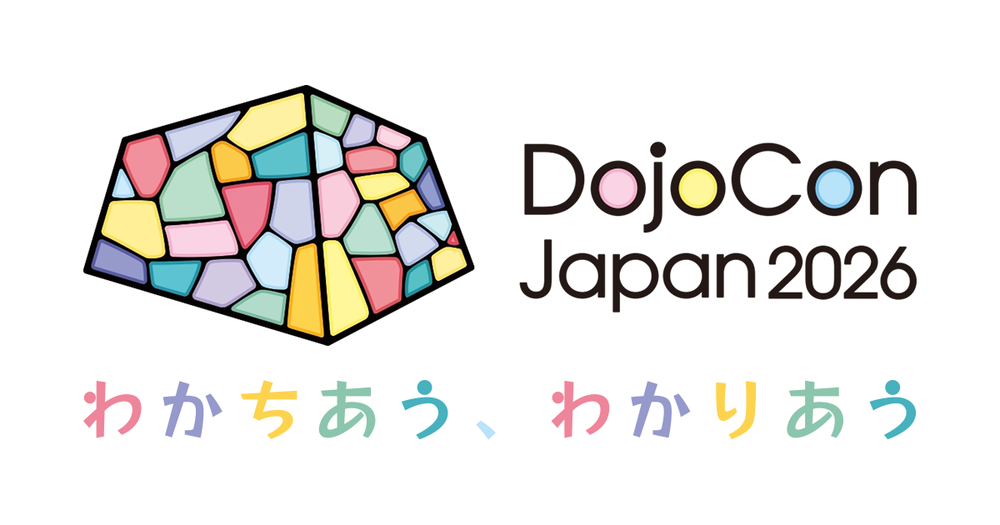
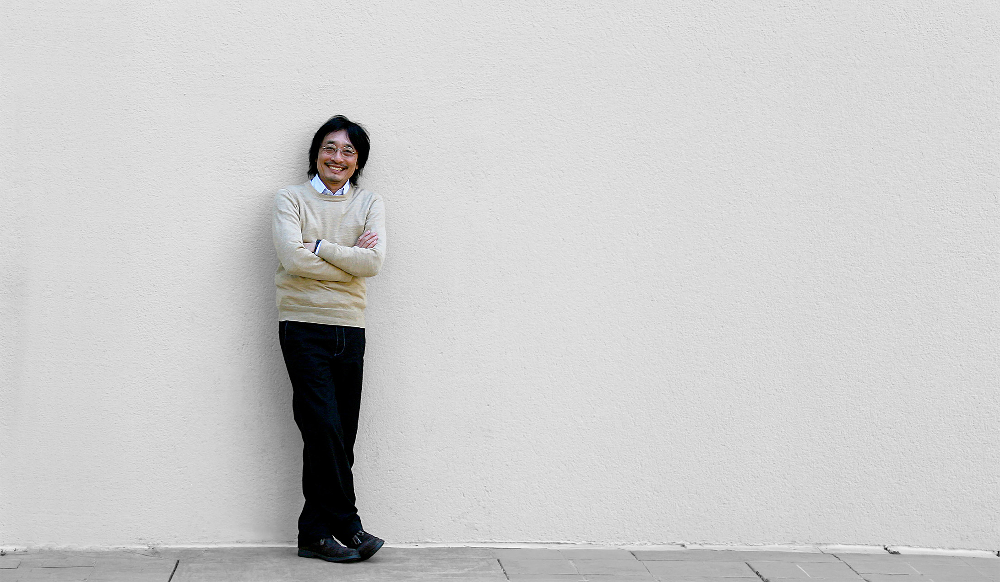

2026.11.01 |SUN|
岩手県盛岡市中ノ橋通1丁目1-10プラザおでって
DojoCon Japan 2026 Theme
CoderDojoには、地域も立場も違うさまざまな人たちが集まっています。
子どもたちの「やってみたい」を応援する人。
道場を続ける人。新しく始めようとする人。
それぞれの経験や思いを持ち寄り、話し、聞き、わかちあうことで、
少しずつお互いをわかりあっていきます。
ロゴは盛岡城跡の石垣とステンドグラスをイメージしました。
さまざまな色や形を持つ個々がその形を保ったまま1つの形を成す姿は、
多様な価値観を持つ人たちが集まり1つの場をつくるCoderDojoの姿にも重なります。
DojoCon Japan 2026は、全国のCoderDojoに関わる人たちが集い、
互いの思いと経験をわかちあう、わかりあう1日です。
Outline
開催概要
参加無料
- 開催日時
-
2026.11.01 SUN
10:00-17:00
- 会場
-
盛岡市観光文化交流センタープラザおでって
岩手県盛岡市中ノ橋通1丁目1-10
About CoderDojo
コーダー道場とは？
CoderDojoは子ども達にプログラミングを学ぶ場を提供する、ボランティア主導の国際的な非営利活動です。（*1）
CoderDojoは2011年にアイルランドから始まり、日本国内では全国に200以上の道場で毎年1,200回以上（*2）開催されています。
CoderDojoに参加する子ども達にとっては、エンジニアやデザイナー、各地域の保護者や学生、研究者や経営者など（メンター）と出会える場にもなっています。
- *1 地図で見る: https://map.coderdojo.jp/world
- *2 統計を見る: https://coderdojo.jp/stats
DojoCon Japanとは？
DojoCon Japanは、全国のCoderDojoコミュニティメンバーが集まる年に1度のカンファレンスイベントです。
2016年から開催されており、その年ごとに異なる地域の実行委員会が中心となって運営されています。
各地のCoderDojoで活動するチャンピオン、メンター、保護者などが集まり、それぞれの取り組みや経験を共有しながら交流を深めます。
セッションやワークショップ、パネルディスカッションなどを通じて運営の工夫や課題、子どもたちとの関わり方、新しい技術やアイデアについて学び合う場となっています。また、普段は地域ごとに活動している仲間たちが直接顔を合わせ、新たなつながりを生み出す貴重な機会でもあります。
